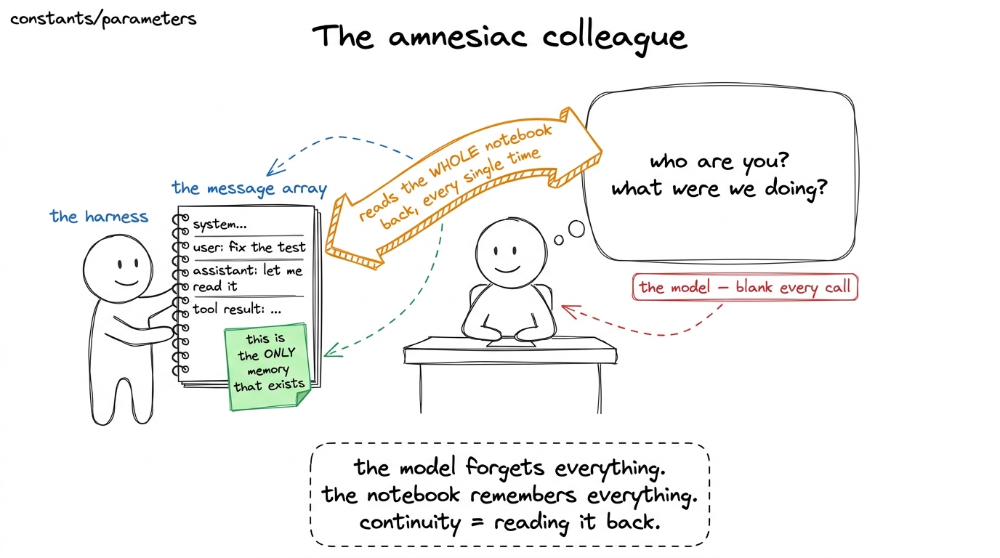
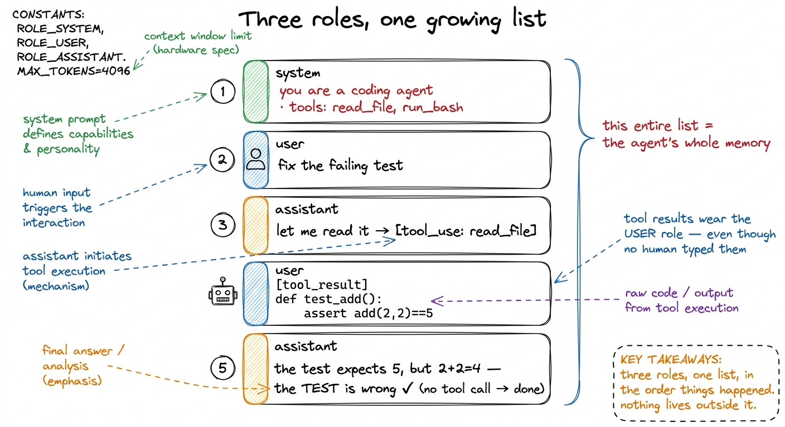
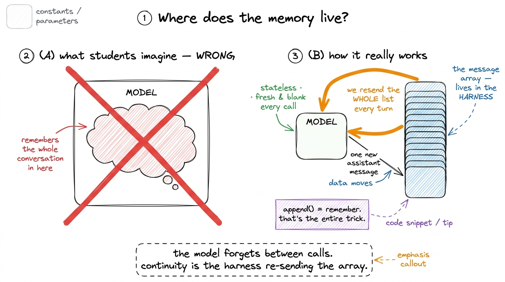
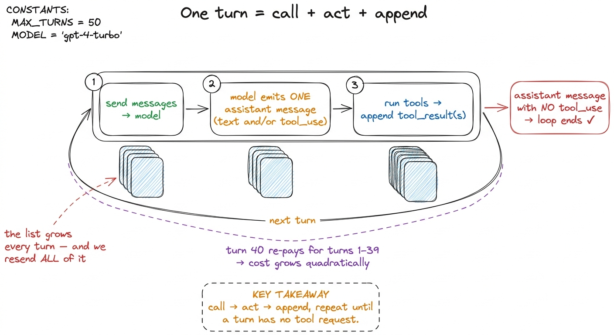
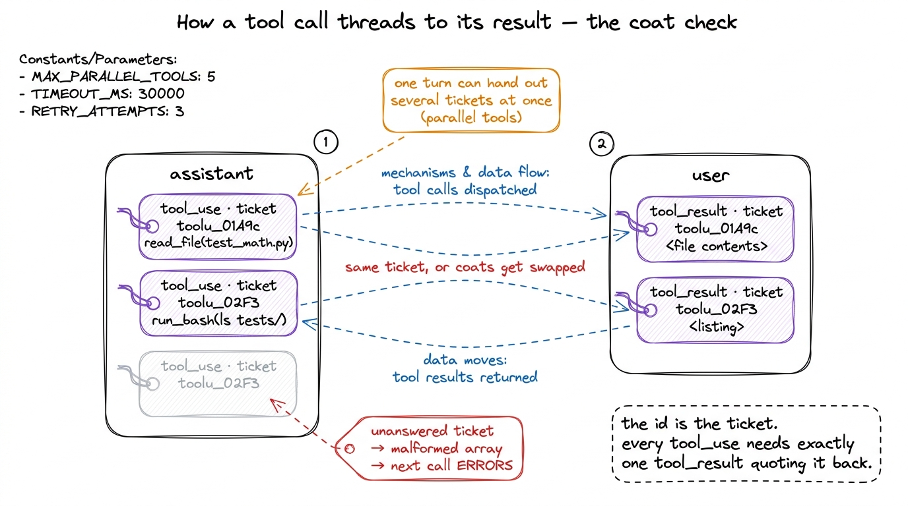

Teaching messages, turns & state
By the end of this chapter you can stand at a whiteboard and make one idea land so hard that half your students' future questions answer themselves: the message array is the agent's entire memory — there is no hidden mind, just a list you keep re-sending. If a student walks out believing that, they will debug their own harness for the rest of the workshop. Let's build it from zero.
This is the quiet centre of the whole course. Every fancy thing we add later — memory files, compaction, checkpointing, sub-agents — turns out to be a small edit to one list. So you have to own this list completely, and teach it so plainly that it feels obvious in hindsight.
Start with a claim that sounds wrong
Say it out loud on day one and let it sit: the model has no memory. None. Every time you call it, it wakes up with total amnesia. It does not remember your last question, the file it just read, or the plan it made two minutes ago.
Students will resist this, because chatting with an agent feels like talking to something that remembers. That feeling is the illusion we are about to take apart.

figure rendering · The founding metaphor: the model is an amnesiac who forgets every callA message: role plus content
Now open the notebook and look at a single line. Each entry is a message, and a message is embarrassingly simple: a role (who is speaking) and some content (what they said). That's it.
There are only three roles. Teach them as three characters in a play:
system— the standing instructions. Who the agent is, what tools exist, how to behave. Written once, at the top, sits above everything like a stage direction.user— anything coming into the model. The human's request, obviously. But here is the twist students never guess: tool results also arrive asusermessages. The output of reading a file, the result of running a command — from the model's point of view that's just "stuff from the outside world I now have to react to."assistant— everything the model itself produced: its prose, its reasoning, and its requests to run tools.
system: "you are a coding agent · tools: read_file, run_bash". user: "fix the failing test". assistant: "let me read the test file → [run read_file]". user: "[tool result] def test_add(): assert add(2,2)==5". Point at that last line and say slowly: "no human typed this. The tool produced it. But it still wears the user role — because to the model, the world and the human are the same channel: things it did not write, that it must now respond to."
figure rendering · The grammar of a session: system / user / assistant interleaved in ordThe array is the state — there is nowhere else
Here is the sentence to hammer until it echoes: the array is the state, and there is no other state.
The model is stateless. Each call — think of it as call_model(messages, tools) — starts from absolute zero. No stashed variable, no scratchpad, no recollection of last time. The only reason the session feels continuous is that we send the entire history back on every single call.
So the agent's memory is not a property of the model. It is a property of us re-sending the list. Let that flip how students think:
- Appending to
messagesis literally the act of remembering. - Deleting from it is forgetting.
- Rewriting it is lying to the agent about its own past.
print(messages). That array, in full, is its mind at that instant. Debugging a harness is just reading the tape." Watch the room go quiet. This is the idea that makes the rest of the workshop feel simple instead of magical.
figure rendering · Kill the wrong mental model on the spot: memory is not inside the modeWhat is a "turn"?
The word "turn" gets tossed around loosely, so pin it down for students. A turn is one model call plus the tool round-trip it triggers. Three beats:
- We send the current
messagesto the model. - The model produces one assistant message — maybe just text, maybe with one or more tool-call requests.
- If it asked for tools, we run them and append the results.
Call → act → append. That's a turn. The agent loop is just turns repeating until the model produces a turn with no tool request — its way of saying "I'm done." A simple question is one turn. "Fix the failing test" might be six.

figure rendering · A turn is one call plus its tool round-trip. Turns repeat until one haThreading: how a tool call finds its result
Now the piece that trips up everyone building their first harness — teach it slowly, this is where the live demo earns its keep.
When the model asks for a tool, it doesn't just say "run read_file." Inside its assistant message it emits a structured tool_use block carrying three things: a name, an input (the arguments), and — the crucial one — an id.
That id is a thread. When we run the tool and hand the output back, we don't append raw text. We wrap it in a tool_result block that quotes a matching tool_use_id pointing back at the exact call it answers. So the model can read the list and know which result belongs to which request — even if it fired several at once.
# The model's assistant message contains a tool_use block:
{"role": "assistant", "content": [
{"type": "text", "text": "Let me check the test file."},
{"type": "tool_use", "id": "toolu_01A9c", # <- the ticket
"name": "read_file", "input": {"path": "test_math.py"}},
]}
# Our reply must quote that SAME id back:
{"role": "user", "content": [
{"type": "tool_result", "tool_use_id": "toolu_01A9c", # <- must match
"content": "def test_add():\n assert add(2, 2) == 5\n"},
]}Two rules keep the thread from tangling, and real harnesses enforce both:
Rule 1 — every tool_use must be answered, exactly once. Three tool calls in a turn means the very next user message needs three tool_results with the three matching ids — no more, no fewer. A dangling call (requested but never answered) corrupts the array and the next API call errors out.
Rule 2 — one turn can open several threads. Modern models emit multiple tool_use blocks at once when the calls are independent (read three files in parallel). Your loop must walk every block and produce a result for each. Parallel tool calls are just several tickets handed out in one turn and redeemed in one reply.

figure rendering · Tool calls and results are stitched by id: each tool_use carries a ticWatching a real session on the tape
Put it all together with a trace, because seeing the list grow beats any amount of talk. The user asks: "is the add function correct?"
[system] you are a coding agent. tools: read_file, run_bash
[user] is the add function correct?
--- turn 1 ---
[assistant] "let me read it." + tool_use(id=t1, read_file "math.py")
[user] tool_result(t1) → "def add(a,b): return a - b"
--- turn 2 ---
[assistant] "there's a bug — it subtracts. running the tests."
+ tool_use(id=t2, run_bash "pytest -q")
[user] tool_result(t2) → "1 failed: test_add"
--- turn 3 ---
[assistant] "confirmed: add uses '-' not '+', and the test fails.
it is not correct." (no tool_use → loop ends)Three turns, every line an entry in one array. On turn 3 the model sees all of turns 1 and 2 — the file, the test output, its own earlier words — only because we resent the whole tape. Remove any line and you change what the model knows. That is the entire game.
print(json.dumps(messages, indent=2)) at the top of the loop. Run "is the add function correct?" and let students watch the list grow from 2 entries to 8 on the projector. Then do the surgery: comment out the messages.append(tool_result) line, re-run, and watch the model hallucinate or the API throw a "tool_use without tool_result" error. Uncomment, works again. Nothing teaches "the array is the state" like breaking it and fixing it in front of them.The 2-hour lecture plan (7:00–9:00 AM IST)
Here is a block-by-block plan you can run as-is. One board sequence, one live build per block, one checkpoint question to close each.
Block A — the amnesiac (7:00–7:30). Open cold with "the model has no memory." Draw the amnesiac-colleague figure. Introduce the notebook. Board: the empty thought-bubble + the notebook being read back. Live build: show a one-line script that calls the model twice with NO history — prove it forgets your name between calls. Checkpoint: "Where does the memory live — in the model or in your code?"
Block B — roles and the array (7:30–8:05). Introduce the three roles as characters. Build the four-color card stack on the board, ending on the robot-icon tool-result card. Live build: hand-construct a messages list in Python with a system + user message, call the model once, print the assistant reply, append it. Checkpoint: "A file's contents come back — which role do they wear, and why?" (Answer: user; the model's one ear.)
Block C — turns and cost (8:05–8:30). Define a turn as call → act → append. Draw the three-stage timeline with the growing stack. Reveal the quadratic-cost note. Live build: wrap the block-B code in a while loop; run a two-turn interaction; print the array after each turn so the stack visibly grows. Checkpoint: "Why does turn 40 cost more than turn 2?"
Block D — threading + break it (8:30–9:00). The coat-check metaphor and the id thread. Draw the two-ticket figure. Then run THE demo: print-the-array, break the tool_result append, watch it fail, fix it. Checkpoint: "Your assistant message has three tool_use blocks — how many tool_results must the next message have, and what happens if it has two?"
What this buys you — everything downstream is an edit to this list
Leave students with the reveal that makes the rest of the workshop feel inevitable. Once "the array is the state" is firm, the big features become simple operations on one list:
- Memory / CLAUDE.md = prepending durable facts to the array before the session starts.
- Compaction = replacing a long stretch of old messages with one short summary message.
- Durability / checkpointing = saving the array to disk after each turn so a crash can reload it.
- Sub-agents = spawning a fresh array for a child, then folding its answer back as one message in the parent's array.
The one thing the array does not solve on its own is its own growth. Nothing here stops the tape from ballooning past the context window, at which point the model physically can't see the early turns and resending everything stops being possible. That tension — a growing state versus a fixed window — is the whole reason the context engine exists, and it's exactly where the workshop heads next. But now your students carry the right frame in: there is no hidden memory to manage, only this list — and context engineering is the art of deciding, every single turn, what earns a place on the tape.
You can now teach
- The founding claim — the model is stateless and forgets everything between calls — using the amnesiac-with-a-notebook metaphor.
- The three roles (system / user / assistant) and the load-bearing surprise that tool results wear the user role because the model has one ear for everything from the outside.
- "The array is the state" — that appending is remembering, and
print(messages)shows the agent's entire mind. - A turn as call → act → append, why turns repeat until one has no tool call, and why resending the whole list makes cost grow quadratically.
- Id threading via the coat-check metaphor: every
tool_useneeds exactly onetool_resultquoting its id back, and one turn can open several threads at once. - The break-it live demo and the closing reveal that memory, compaction, durability, and sub-agents are all just edits to this one list.